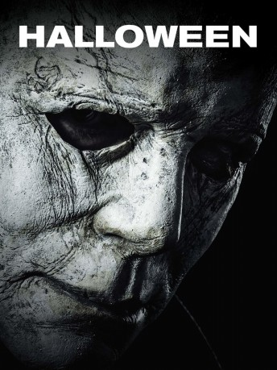

#10734 Halloween
 gesehen am 22.02.2019
gesehen am 22.02.2019
 
 IMDB-Wertung: 6.7 / 10
IMDB-Wertung: 6.7 / 10  Metascore: 67
Metascore: 67 
Seit 40 Jahren sitzt Michael Myers (Nick Castle) in einer psychiatrischen Anstalt in Haft. Er ist mit anderen hochgefährlichen Insassen vollkommen abgeschottet von der Außenwelt. Doch als Myers verlegt werden soll, verunglückt der Gefangenentransport mitten in der Nacht auf offener Straße. Der Killer nutzt die Chance und flüchtet. Sein bestialischer Drang, Menschen zu töten, zieht ihn erneut nach Haddonfield, wo die Bewohner jetzt wieder um ihr Leben fürchten müssen, nachdem der maskierte Myers die US-amerikanische Kleinstadt bereits vor vier Jahrzehnten in einer brutalen Mordserie terrorisierte. Laurie (Jamie Lee Curtis), inzwischen Mutter von Karen (Judy Greer) und Oma von Allyson (Andi Matichak), ist dem stoischen Mörder mit der weißen Maske damals knapp entkommen – und sie ist darauf vorbereitet, ihn fertigzumachen. Laurie hat sich sogar gewünscht, dass Myers ausbricht, damit sie ihn endlich töten kann…
Jahr: 2018
Dauer: 105 Minuten
FSK: 16
Land: USA Studio: Universal PicturesTonspuren: DTS - ,
Untertitel: Deutsch,
Auflösung: 1080p (1920x808) Größe: 5529 MB
Genre: Thriller, Horror
Regisseur: David Gordon Green
Drehbuch: Jeff Fradley, Danny McBride, David Gordon Green, John Carpenter, Debra Hill
Soundtrack: Cody Carpenter, John Carpenter, Daniel A. Davies
Darsteller:
 Jamie Lee Curtis als Laurie Strode
Jamie Lee Curtis als Laurie Strode Judy Greer als Karen
Judy Greer als Karen- Andi Matichak als Allyson
- James Jude Courtney als The Shape
- Nick Castle als The Shape
 Haluk Bilginer als Dr. Sartain
Haluk Bilginer als Dr. Sartain Will Patton als Officer Hawkins
Will Patton als Officer Hawkins- Rhian Rees als Dana Haines
 Jefferson Hall als Aaron Korey
Jefferson Hall als Aaron Korey Toby Huss als Ray
Toby Huss als Ray Virginia Gardner als Vicky
Virginia Gardner als Vicky Dylan Arnold als Cameron Elam
Dylan Arnold als Cameron Elam- Miles Robbins als Dave
- Drew Scheid als Oscar
- Jibrail Nantambu als Julian
 Michael 'Mick' Harrity als Warden Kuneman
Michael 'Mick' Harrity als Warden Kuneman- Matthew Anderson als Guard Haskell
- Diva Tyler als Caretaker
- Vince Mattis als Lumpy
 Omar J. Dorsey als Sheriff Barker
Omar J. Dorsey als Sheriff Barker- Pedro Lopez als Lynch
- Charlie Benton als Officer Richards
 Christopher Allen Nelson als Officer Francis
Christopher Allen Nelson als Officer Francis- Michael Smallwood als Hunky Doctor
- Carmela McNeal als Sexy Nurse
- Kurt Deimer als Teller
- Chris Holloway als Officer #1
- Sophia Miller als Young Karen
 P.J. Soles als Teacher
P.J. Soles als Teacher- Jon-Erik Hexum als Phineas Bogg from Voyagers! (archive footage)
- Meeno Peluce als Jeffrey Jones from Voyagers! (archive footage)
- Varnum Honey als Motorcycle Cop from Repo Man (archive footage)
- Angela Anderson als Nurse (uncredited)
 Willie Tyrone Ferguson als Police Officer / CSI (uncredited)
Willie Tyrone Ferguson als Police Officer / CSI (uncredited)- Robert Fortunato als Deputy Wheeler (uncredited)
 Marian Green als Gina Panchella / Sandwich Woman (uncredited)
Marian Green als Gina Panchella / Sandwich Woman (uncredited)- David Lowe als Chess Player (uncredited)
- R.J. Miller als Skeleton Party Go'er (uncredited)
- Nyzahir Muhammad als Party Goer (uncredited)
- Rob Niter als Deputy Sheriff Walker (uncredited)
- Aaron Christian Paderewski als Mechanic (uncredited)
- Johnny Price als Criminally Insane Patient (uncredited)
- Hannah Russell als Teen on Bike (uncredited)
- Marian Sing als Andrea Wagner / Trick or Treat Lady (uncredited)
- Sean Von Buseck als Onlooker (uncredited)
- Brien Gregorie als Father
- Teresa Johnson als Onlooker
- Jonathan Bruce als News Reporter
- Charlie Donadio als Corey
- Stephanie Butts als Shameel
Datei: X:\FSK18-Collections\Halloween\Halloween (2018, FSK16, 1920x808).mkv seit 22.02.2019
Festplatte: FSK18
 Es gibt insgesamt 14 Filme in der Gruppe 'FSK18-Collections\Halloween'
Es gibt insgesamt 14 Filme in der Gruppe 'FSK18-Collections\Halloween'